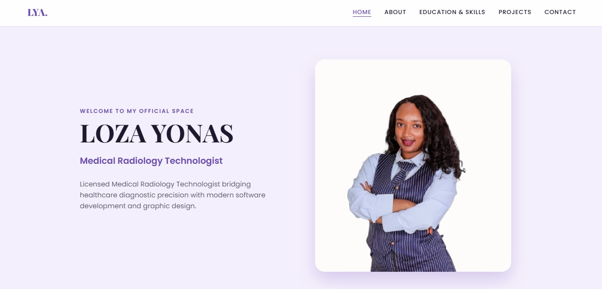
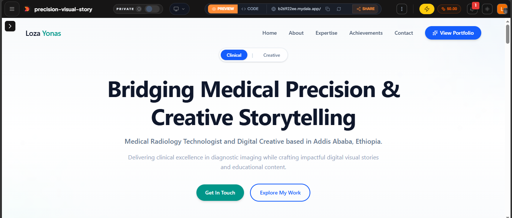
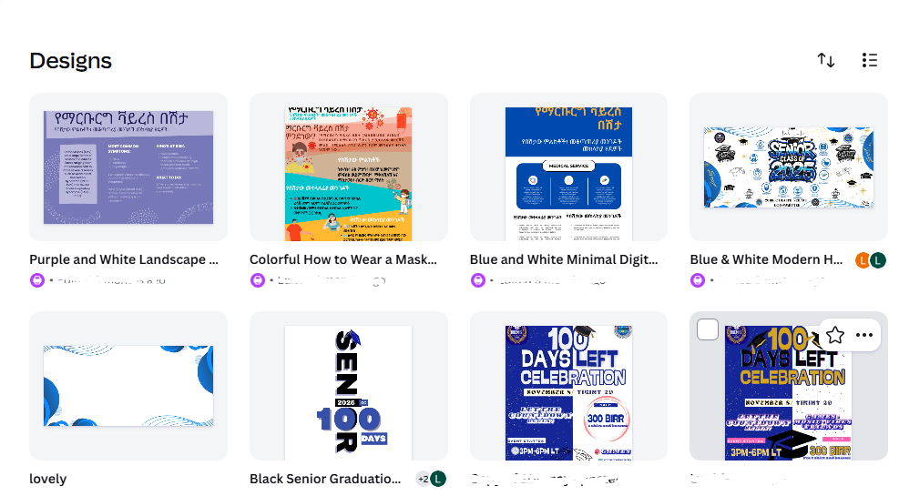

1. Personal HTML Portfolio
Multi-page accessible site showcasing technical skills, education, and career experience.
Technologies: HTML5, CSS3, Git, GitHub

Multi-page accessible site showcasing technical skills, education, and career experience.
Technologies: HTML5, CSS3, Git, GitHub

Web development project built during bootcamp, focusing on responsive layout structuring.
Technologies: Dala Studio, HTML Layouts

Promotional designs and marketing assets created for graduation committees and campaigns.
Technologies: Graphic Design Tools, Digital Layouts